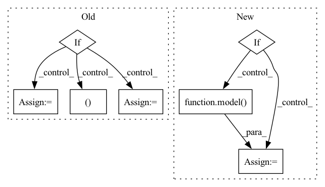

Pattern ID :15208
Before Change
else:
dict_outputs = model(x)
if self.use_softmax:
prob = F.softmax(dict_outputs["pred"], dim=1)
else:
emb = dict_outputs["emb"] // b x n_emb_dims x h x w
_, dist = prediction(emb.detach(), prototypes.detach(), return_distance=True)
prob = F.softmax(-dist, dim=1)
// get uncertainty map
uncertainty_map = self.uncertainty_sampler(prob).squeeze(dim=0) // h x wAfter Change
selected_queries_per_img = torch.zeros((h * w)).to(self.device)
if self.use_openset:
dict_outputs = model( x)
emb = dict_outputs["emb_"] // b x n_emb_dims x h x w
_, dist = prediction(emb.detach(), prototypes.detach(), return_distance=True)
prob = F.softmax(-dist, dim=1)In pattern: SUPERPATTERN
Frequency: 3
Non-data size: 7
Instances Fragment ID: 51406165
Project Name: noelshin/pixelpick
Commit Name: 21cf489ed3dac7218ec11a1d205b41b0328295d4
Time: 2021-02-11
Author: gyungin@robots.ox.ac.uk
File Name: segmentation/al_selectors/query.py
M Class Name: QuerySelector
N Class Name: QuerySelector
M Method Name: __call__(4)
N Method Name: __call__(3)
M Parent Class:
N Parent Class:
M File Name: segmentation/al_selectors/query.py
N File Name: segmentation/al_selectors/query.py
M Start Line: 46
M End Line: 285
N Start Line: 38
N End Line: 275
Before Change
image = image.to(device=context.device)
output = model(image)
if isinstance(context.criterion, nn.BCEWithLogitsLoss):
label.unsqueeze_(1)
label_onehot = torch.FloatTensor(label.shape[0], 10)
label_onehot.zero_()After Change
avg_data_time.update(time.time() - batch_end)
image = image.to(device=context.device)
if context.grad_scaler:
with autocast():
output = model(image)
with torch.no_grad():
label_teacher = teacher(image)
loss, label = _calc_loss(label, label_teacher)
context.grad_scaler.scale(loss).backward()
context.grad_scaler.step(context.optimizer)
context.grad_scaler.update()
else:
output = model( image)
with torch.no_grad():
label_teacher = teacher(image)
loss, label = _calc_loss(label, label_teacher)
loss.backward()
context.optimizer.step()
Fragment ID: 51406136
Project Name: alibaba/tinyneuralnetwork
Commit Name: b6886be8e00dfa3f0935aca089d331e0e119d986
Time: 2022-07-04
Author: 35247391+dinghuanghao@users.noreply.github.com
File Name: tinynn/util/cifar10.py
M Class Name: AnonimousClass
N Class Name: AnonimousClass
M Method Name: train_one_epoch_distill(2)
N Method Name: train_one_epoch_distill(2)
M Parent Class:
N Parent Class:
M File Name: tinynn/util/cifar10.py
N File Name: tinynn/util/cifar10.py
M Start Line: 173
M End Line: 228
N Start Line: 219
N End Line: 264
Before Change
image = image.to(device=context.device)
output = model(image)
if isinstance(context.criterion, nn.BCEWithLogitsLoss):
label.unsqueeze_(1)
label_onehot = torch.FloatTensor(label.shape[0], 10)
label_onehot.zero_()After Change
image = image.to(device=context.device)
context.optimizer.zero_grad()
if context.grad_scaler:
with autocast():
output = model(image)
loss, label = _calc_loss(label)
context.grad_scaler.scale(loss).backward()
context.grad_scaler.step(context.optimizer)
context.grad_scaler.update()
else:
output = model( image)
loss, label = _calc_loss(label)
loss.backward()
context.optimizer.step()
Fragment ID: 51406172
Project Name: alibaba/tinyneuralnetwork
Commit Name: b6886be8e00dfa3f0935aca089d331e0e119d986
Time: 2022-07-04
Author: 35247391+dinghuanghao@users.noreply.github.com
File Name: tinynn/util/cifar10.py
M Class Name: AnonimousClass
N Class Name: AnonimousClass
M Method Name: train_one_epoch(2)
N Method Name: train_one_epoch(2)
M Parent Class:
N Parent Class:
M File Name: tinynn/util/cifar10.py
N File Name: tinynn/util/cifar10.py
M Start Line: 98
M End Line: 139
N Start Line: 116
N End Line: 178